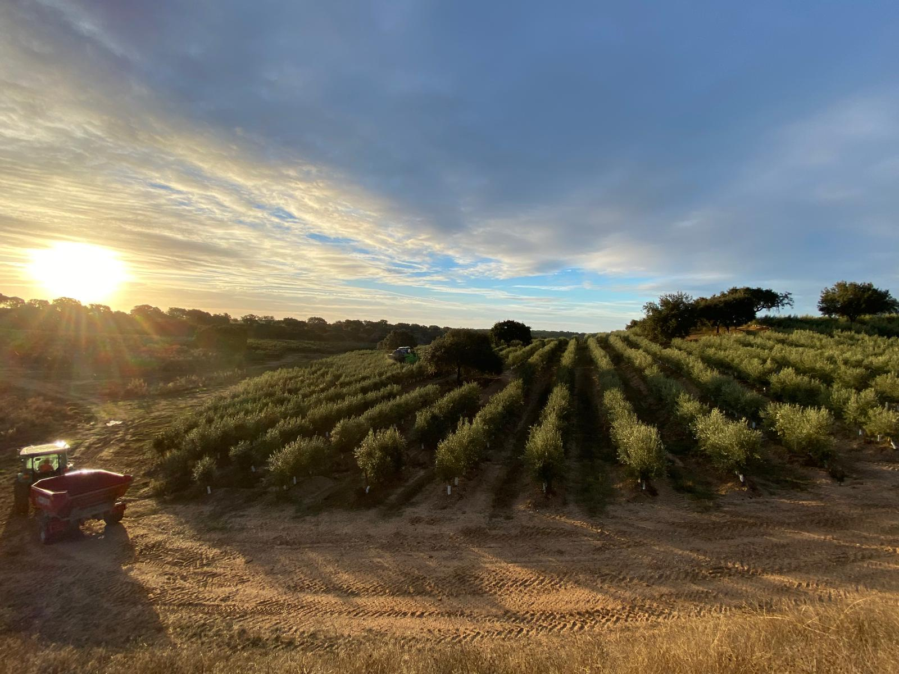
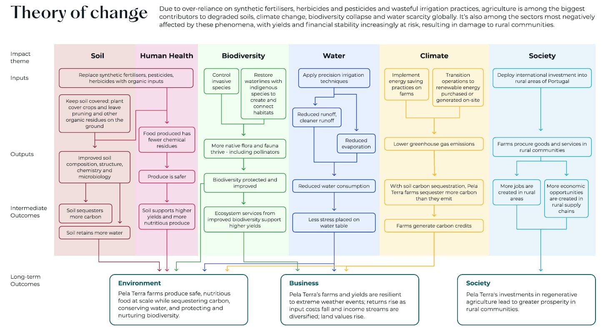
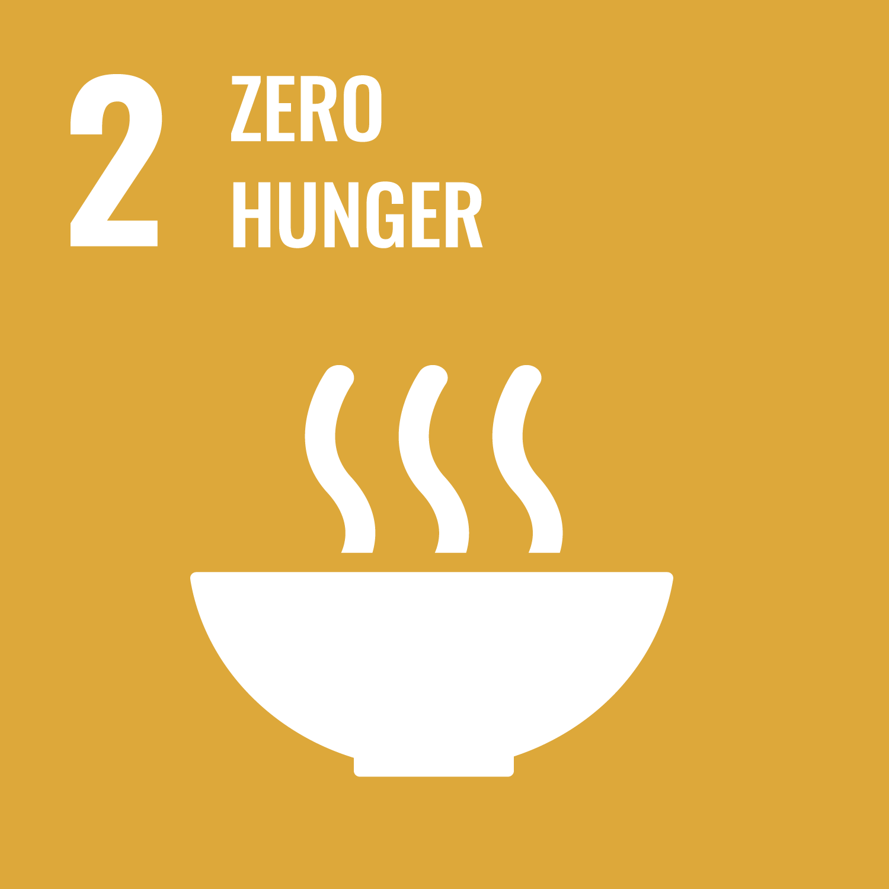
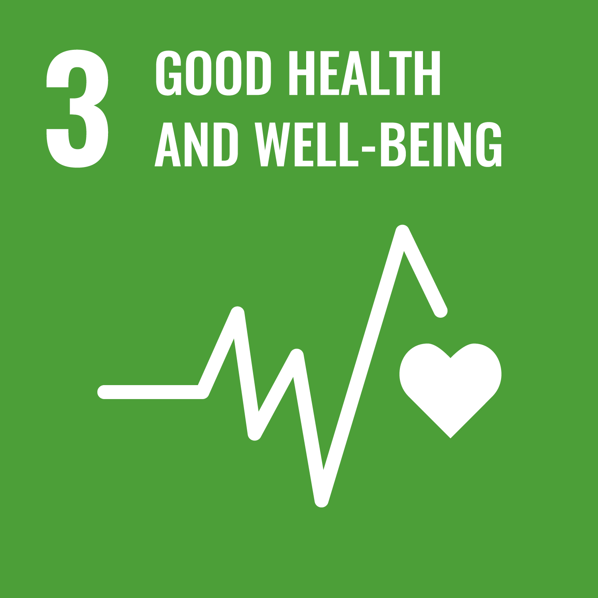
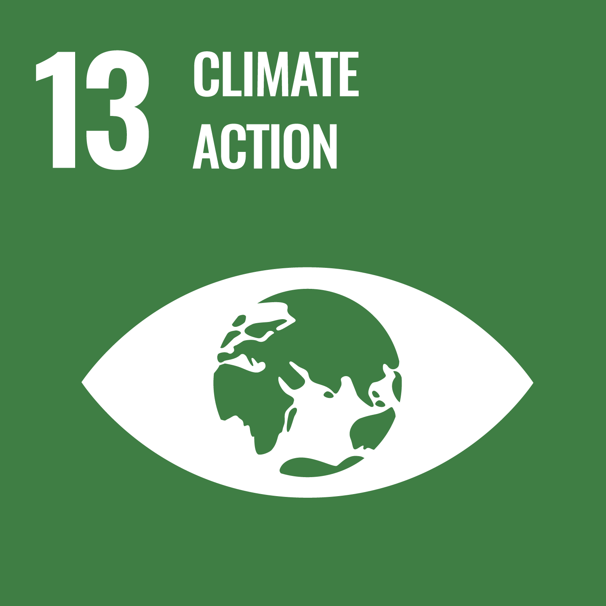
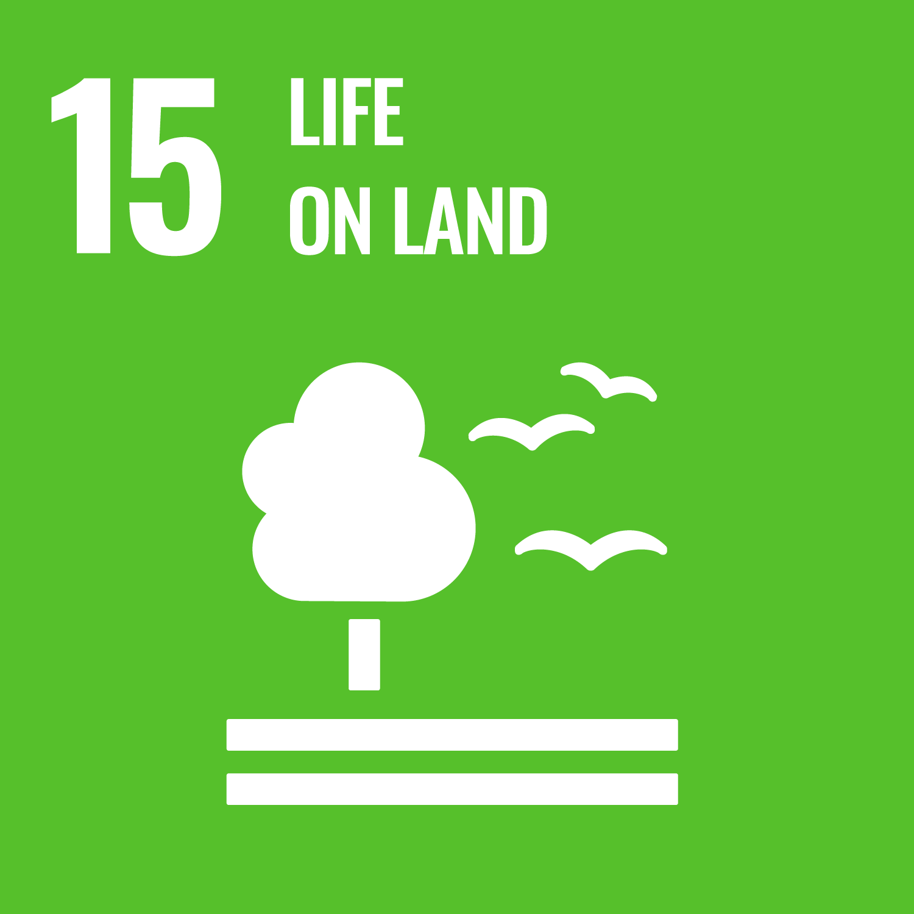
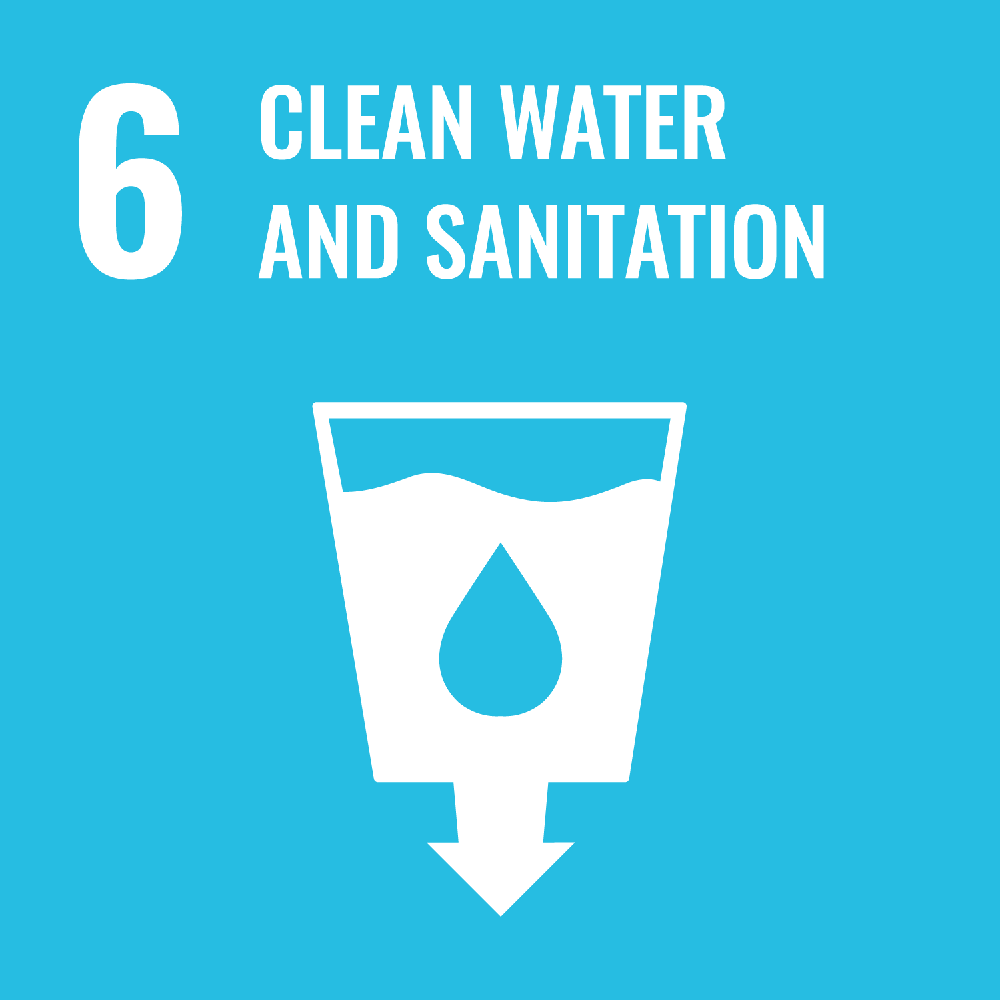
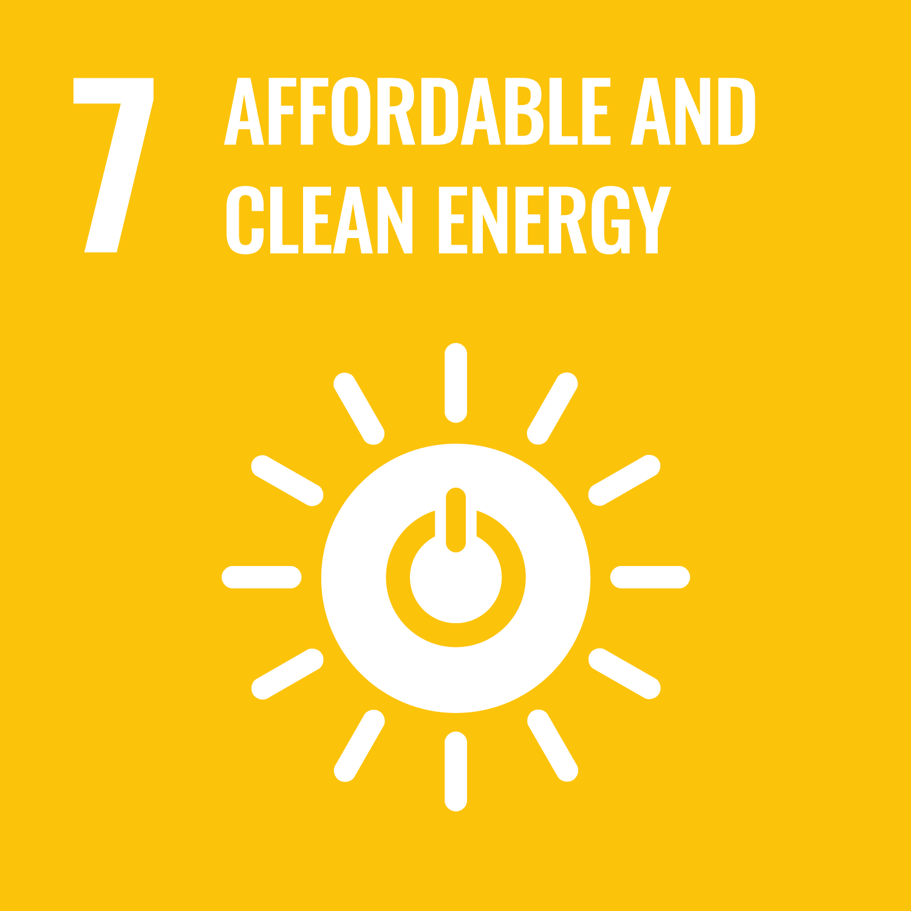
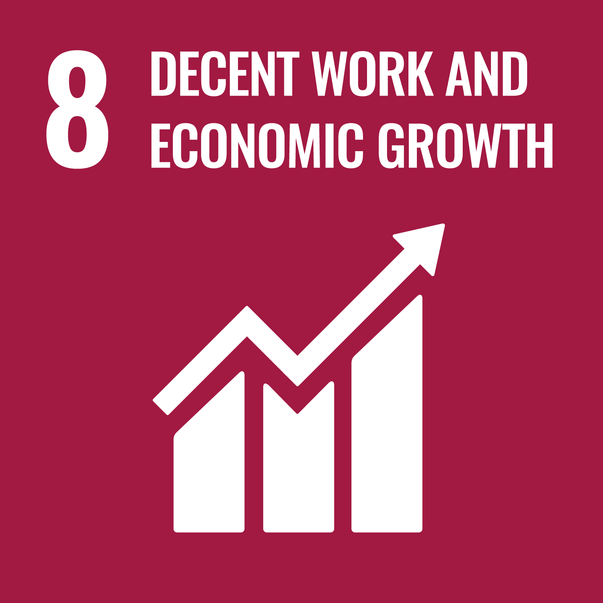
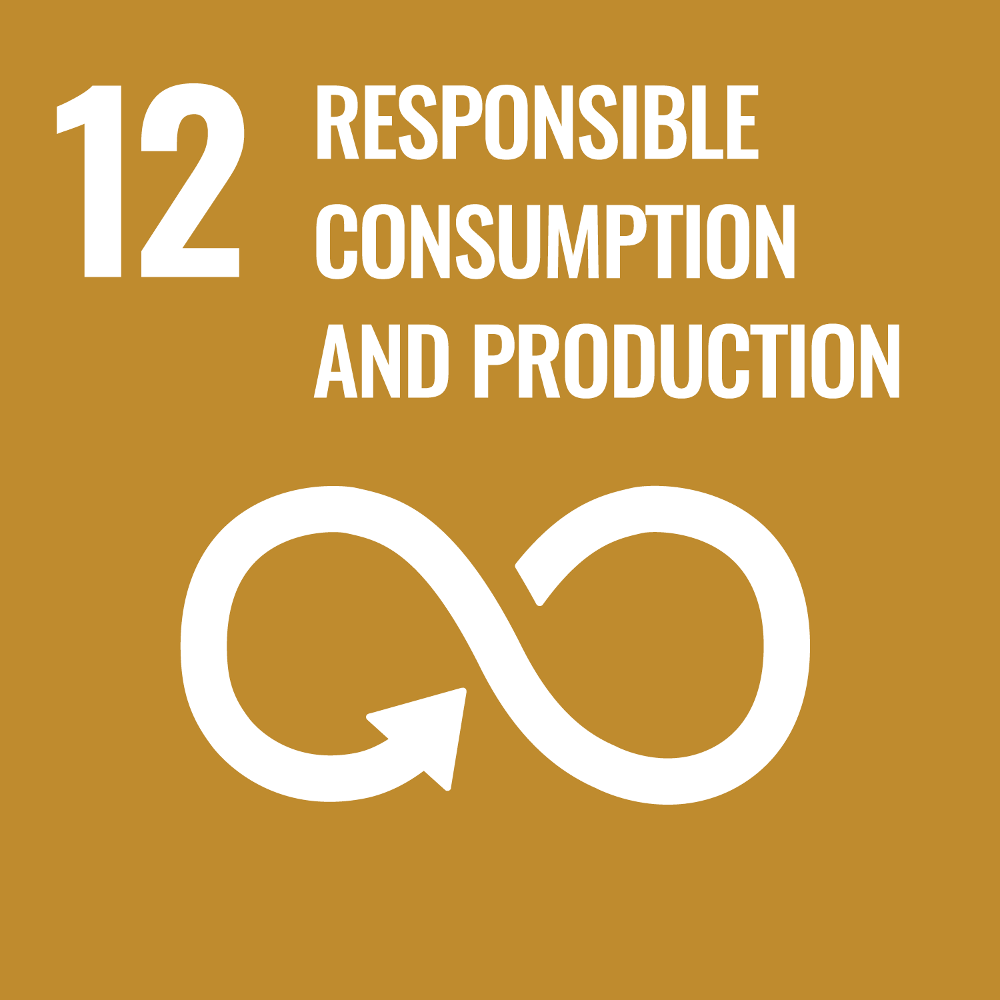

Soil
20% average improvement in soil health indicators across all assets.
Pela Terra · Impact
At Pela Terra we work to demonstrate that regenerative agriculture, applied at scale, can restore soils, protect biodiversity, conserve water, and support rural communities — while delivering competitive financial returns.
Our Vision
Humans need food to survive. But modern agriculture is harming both the planet and those it feeds. It contributes to climate change, fuels biodiversity collapse, and produces less nutritious food — while remaining among the industries most exposed to the very climate risks it helps create.
At Pela Terra, we see this as both a problem and an opportunity. By applying regenerative approaches at scale on Portuguese farmland, we can begin to reverse the damage that decades of intensive agriculture have caused: rebuilding soil health, reducing chemical inputs, conserving water, protecting native species, and sequestering carbon.
In doing so we can produce the healthy food we need and secure more resilient returns for our investors.
The solution is literally in the ground beneath our feet.

Our Approach
Soil health is the central thread connecting almost every form of environmental and social impact a farm can create. Healthy soil sequesters carbon, retains water, supports biodiversity, and produces more nutritious food.
By transitioning our farms towards regenerative practices, we set in motion a chain of positive outcomes: improved soil biology and structure; more carbon sequestration; reduced water consumption; thriving native flora and fauna; safer, more nutritious food; and economic opportunity in rural Portugal.

We substitute synthetic fertilisers, herbicides and pesticides with organic alternatives such as manure, compost, and woodchips.
Cover crops protect soil between orchard rows. We also 'chop and drop', leaving pruning residues and organic matter on the ground.
We set aside areas of each property, unplanted but actively managed, to protect and restore native habitats and species.
We ensure crops are only watered when they need to be, and as much as they need to be, reducing waste and pressure on local water tables.
Impact Strategy
Pela Terra's impact strategy is built around six interconnected themes, aligned with the UN Sustainable Development Goals and tracked using a set of fund-level KPIs.
Between 60 and 70 per cent of EU soils are estimated to be unhealthy. We restore soil health through reduced tillage, cover cropping, and organic inputs, tracking progress across biological, chemical, and physical indicators.




Agriculture accounts for ~70% of global freshwater withdrawals. We apply precision irrigation, improve soil water retention, and restore native vegetation along waterways to reduce runoff and protect quality.

By improving soil health, our farms sequester increasing quantities of carbon. By reducing synthetic inputs and transitioning to renewable energy, we work towards a net negative greenhouse gas balance.

Portugal is home to rich biodiversity. We work to reverse habitat destruction by setting aside land for nature, creating connectivity, and implementing targeted species conservation plans.
By reducing chemical inputs and improving soil health, we aim to produce food that is safer and more nutritious, researching the links between regenerative agriculture and human health outcomes.
We invest 100% of capital in rural areas, creating direct employment, supporting local supply chains, and demonstrating that profitable regenerative agriculture is achievable.


Measurement
Claims about impact must be grounded in evidence. For each fund, we have developed a set of long-term KPIs designed with input from partners, farm operators, and external experts — combining input indicators directly within our control with outcome indicators that track real-world change.
We establish baselines for each property at acquisition and report progress annually, including an honest assessment of where further work is needed. On the ground, our partners NBI and AgroSystemic conduct soil sampling, ecological surveys, habitat assessments, and agronomic monitoring, complemented by drone and satellite imagery.
We are committed to making our measurement methodology more robust over time. Our annual impact reports give a full account of progress.
By 2030, we are committed to achieving:
20% average improvement in soil health indicators across all assets.
10% decrease in water wastage through more efficient irrigation.
30% reduction in synthetic fertiliser inputs per hectare.
Net negative greenhouse gas emissions per hectare.
Reduce herbicide use by 30%.
Reduce pesticide use by 20%.
Net positive biodiversity across all assets (vs. baseline).
At least 20% of total land managed primarily for biodiversity.
10% increase in nutrient density of all produce at harvest.
Pesticide residues on all produce below 50% of EU Maximum Residue Limits.
100% of capital invested in rural areas of Portugal.
Create 5 good jobs in rural areas of Portugal.
Downloads
Annual impact report covering strategy, baselines, and progress across all six themes.
Impact statement and initial report for Pela Terra's second fund.
The full theory of change underpinning Pela Terra's approach to regenerative agriculture investment.
Who we work with
At Pela Terra, we believe that regenerative farmers are stronger together. We're constantly working to build an ecosystem that supports the development of regenerative agriculture in Portugal.
If you have a partnership idea or want to share information, we'd love to hear about it.
welcome@pelaterra.com